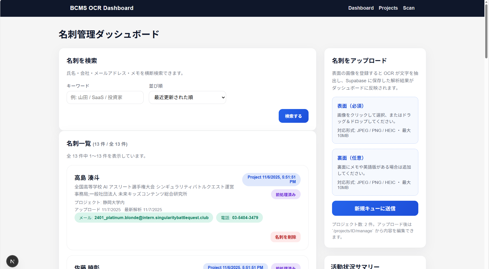
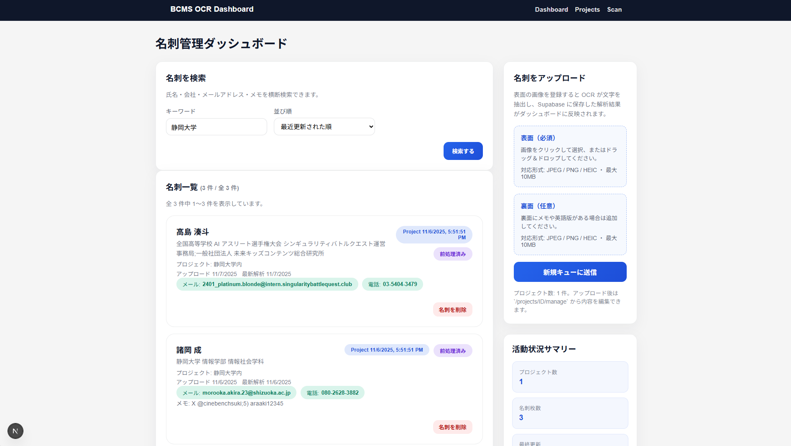

使い方ガイド
1. ダッシュボードを開く

- ブラウザで 名刺管理ダッシュボード にアクセスします。
- 上部には検索欄、中央に名刺一覧、右側にアップロードと活動サマリーが表示されます。
- 各カードには、名前・所属・メール・電話・解析状況がまとめられています。
2. 名刺を検索・閲覧する

- 検索ボックスに「名前」「会社」「タグ」などのキーワードを入力します。
- 並び順を「最近更新」または「アップロード順」から選択できます。
- カードをクリックすると詳細ページに移動し、原本画像・前処理済み画像・抽出情報が確認できます。
名刺詳細ページ（画像と抽出結果が並んでいる状態）のスクリーンショットを貼ってください。
3. 名刺をアップロードする

- 右上の「名刺をアップロード」ボタンまたはメニューから スキャン ページに移動します。
- 名刺を登録したいプロジェクトを選択します。
-
画像の追加方法は 2 通りあります。
- ファイルの選択: JPEG / PNG / HEIC を複数枚まとめて選択できます。
- カメラで撮影: 内蔵・外付けカメラで撮影すると、自動で縦向き補正と明るさ調整がかかり、プレビューに表示されます。
- 不要な画像はプレビューカードの「削除」ボタンで取り除けます。
- 準備ができたら 解析キューに送信 を押すと、バックエンドで前処理 → OCR → Supabase 登録まで自動で実行されます。
プレビューカードにサムネイルが並んでいる様子と「削除」ボタンを示すスクリーンショットを貼ってください。
4. 解析結果の確認
- 進捗はダッシュボードに戻ると自動で反映されます。必要に応じてブラウザを更新してください。
- カードのバッジから「前処理済み」「最新解析日」などを確認できます。
- 詳細ページでは抽出された連絡先情報（名前・役職・メール・電話・住所など）を即座に閲覧できます。
印刷用ヒント: 解析結果が反映されたカード一覧と詳細画面のスクリーンショットを並べて貼ると、来場者が「入力 → 解析 → 確認」の流れを直感的に理解できます。